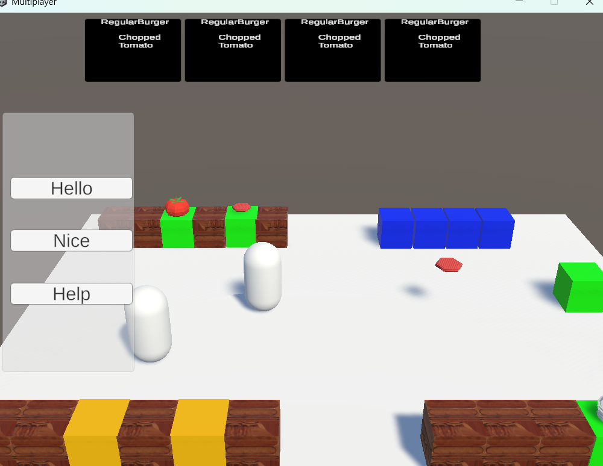
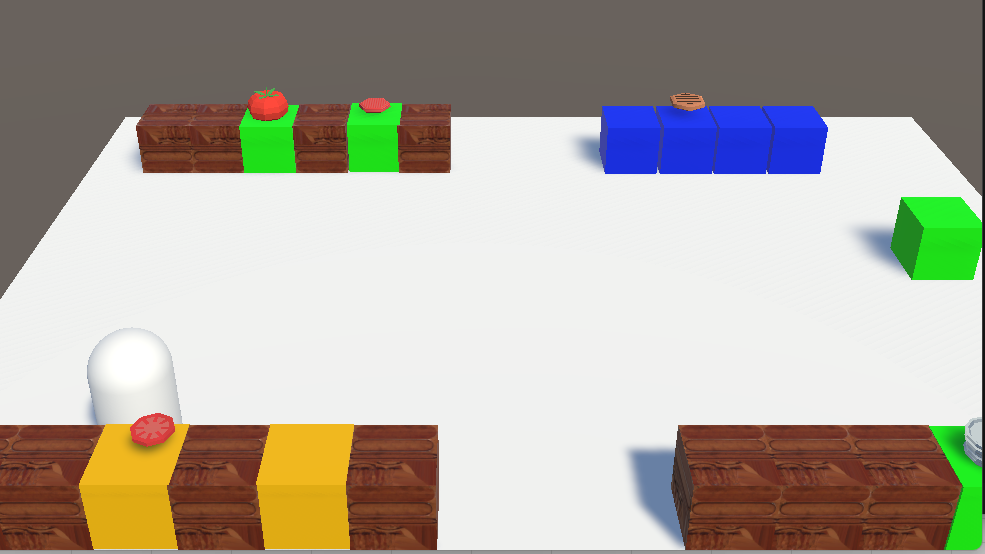
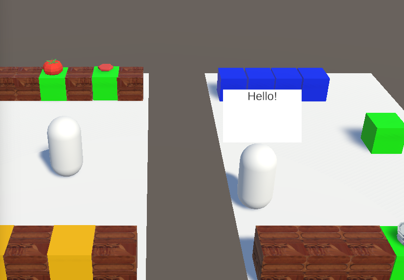

Networked co-op
Multiple players share the same kitchen in real time using Unity Netcode.
A Unity Netcode multiplayer game inspired by Overcooked, where players work together to complete orders.

A networked co-op cooking game built with Unity Netcode and inspired by Overcooked. Players share a kitchen and have to coordinate to prepare and serve incoming orders.
Create a multiplayer game in Unity using Netcode, with at least three unique gameplay features.
Multiple players share the same kitchen in real time using Unity Netcode.
Order tickets list each recipe, and players chop and assemble ingredients at kitchen counters to fill them.
Quick "Hello", "Nice" and "Help" emotes let teammates communicate without voice chat.
A hole opens in the floor, sending players back to one side of the map and swallowing any item that falls in.
This was a solo project, so I programmed all five systems below myself. Every one is server-authoritative: clients ask, the server decides, and the result is broadcast to everyone, so all players always see the same kitchen.
Two players can never grab the same item at once, because every interaction follows the same pattern: request, validate, then broadcast.
SetKitchenObjectParent(), which fires SetKitchenObjectParentServerRpc.NetworkObjectReference and calls TrySetParent().UpdateParentLogicClientRpc updates the item on every client.Dropping and throwing reuse the same pattern to take an item out of a player's hands and back into physics. The server calls TryRemoveParent(), then a ClientRpc re-enables gravity and colliders on every client at the same moment, so the item lands in the same spot for everyone.
Specialised counters where players get ingredients, chop them, cook them and assemble them.
SpawnKitchenObjectServerRpc creates the ingredient on the server and immediately parents it to the requesting player's NetworkObject.NetworkVariable<int> called cuttingProgress, and an RPC updates the progress bar on every client.Players build meals together on plates and deliver them to fill randomly generated orders. The server validates every step, and ClientRpcs keep items and UI in sync for every player.
AddIngredientServerRpc, and the server broadcasts the ingredient to every client by its name.DeliveryRecipeSO ScriptableObjects.A hole in the floor that respawns players at one side of the map and despawns any item that falls in.
TrapRoutine, which shows and hides the floor through a NetworkVariable so it stays in sync for every client.Players pick from preset messages to talk to their teammates. The Emote Manager UI runs only on the local client and safely gets the local player's NetworkObject to start the request.
PlayEmoteServerRpc.PlayEmoteClientRpc.Working with Unity Netcode. It was my first time building a networked game, so concepts like RPCs, NetworkVariables and server authority were all new to me.
I learned through trial and error, testing each system as I built it, and by watching videos online.


I learned that sometimes the only way to make progress is trial and error: trying something, seeing what breaks, and adjusting from there.